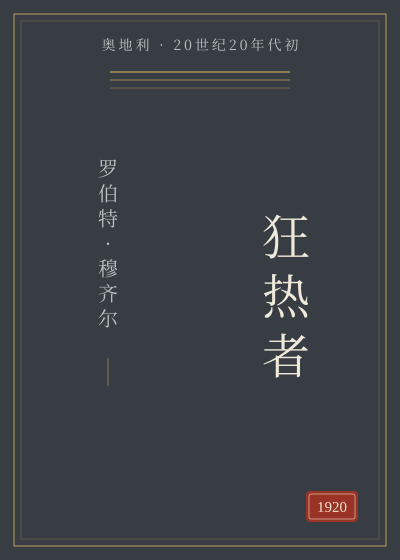
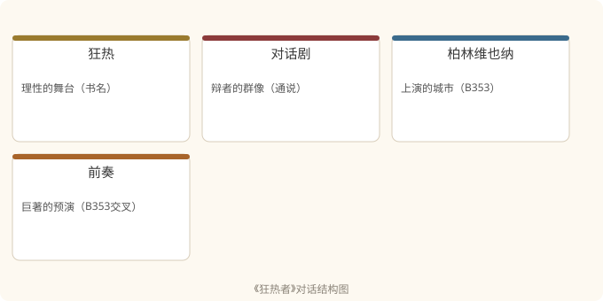

狂热者
一、基本信息
| 作者 | 罗伯特·穆齐尔 |
|---|---|
| 成书/出版 | 1920年（Britannica B353：Die Schwärmer (1920; The Enthusiasts)——'were performed in Berlin and Vienna'——中译名待核） Robert Musil — Encyclopaedia Britannica（百科全书） |
| 国别/地区 | 奥地利 |
| 时代 | 近代 · 20世纪20年代初 |
| 体裁 | 戏剧 |
| 语言 | 德语 |

《狂热者》对话结构图（主题·结构图）
二、创作背景
Britannica（B353）：Die Schwärmer——'a play'——'were performed in Berlin and Vienna'（柏林维也纳上演）。
Britannica（B353）：穆齐尔——'monumental unfinished novel'（《没有个性的人》）作者（交叉）。
题材（通说待核）：'狂热者'的对话剧——理性与狂热的舞台实验。
三、内容脉络
（通说待核）'对话体'的舞台：理性与激情的辩者。
（通说待核）'狂热者'的群像（人物通说待核）。
四、主要人物表
| 人物 | 身份 | 说明 |
|---|---|---|
| 辩者群像 | —— | （通说待核，B353未载） |
五、主题与艺术特点
- '狂热'与理性（书名语境——通说待核）。
- 对话剧的形式（B353：a play）。
- 《没有个性的人》的前奏（B353 交叉）。
六、影响与评论
- Britannica：'were performed in Berlin and Vienna'（B353）。
Robert Musil — Encyclopaedia Britannica（百科全书） - Britannica：穆齐尔巨著（B353 交叉）。
Robert Musil — Encyclopaedia Britannica（百科全书）
七、阅读建议
难点
- 对话剧的抽象。
- 维也纳文化圈（通说待核）。
- 《狂热者》中译名（《狂热者们》）待核。
- 德文原版（公有领域状态待核）。
穆齐尔戏剧侧写；与《没有个性的人》对读。
八、待核实
- 1920年上演细节待核。
- 人物与结构核对（通说）。
- 中译名两说待核。